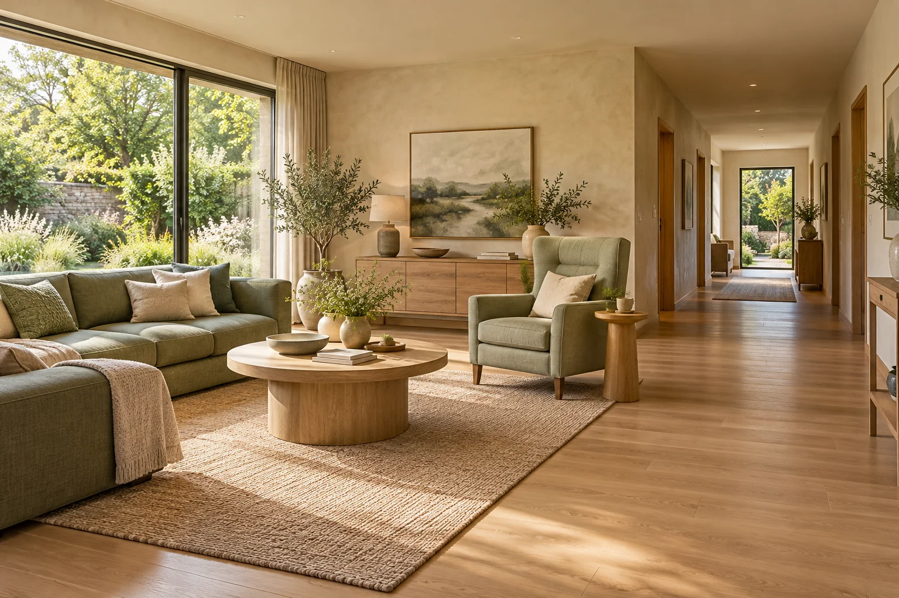

Homeowners planning ahead
People who want to understand access and comfort before a move, renovation, or change in household needs.
Keep the place you love. Make everyday life work better. A thoughtful planning concept for homeowners and families considering practical, comfortable changes at home.
Service design stage. Pilot availability and scope are still being defined.

A difficult threshold. A bathroom that no longer fits your routine. Lighting that makes an evening walk down the hall harder than it should be. Home adaptation is often a collection of small decisions before it becomes a building project.
Everstead Living is being designed to turn those concerns into an organized, room-by-room brief: what matters now, what can wait, and which questions need a qualified professional. The starting point is your routine, your priorities, and a home that still feels like yours.
People who want to understand access and comfort before a move, renovation, or change in household needs.
Adult children and caregivers who need a shared set of priorities instead of disconnected advice.
Occupational therapists, accessibility designers and home-modification contractors interested in a clearer client handoff.
A proposed, focused planning engagement for one home. The purpose is to prepare better decisions before commissioning design or construction.
Proposed scope · Not yet bookableDocument entry, circulation, bathing, lighting and daily activities through a guided discussion.
Separate everyday adjustments from projects that need assessment, design, or trade expertise.
Prepare questions, relevant room notes and a scope outline for independently engaged specialists.
Choose a few daily routines and the rooms involved. Start with concerns and goals; sensitive medical details are unnecessary for an initial conversation.
Review the home context, household preferences and practical constraints. Identify where an occupational therapist or qualified building professional should assess the situation.
Use a staged list to compare options and request scoped proposals. Any installation, clinical assessment or certification remains with the relevant professional.
Illustrative situation: a homeowner is comfortable indoors but finds the front entry awkward. The planning brief would record the route from parking to the door, lighting, thresholds and carrying needs. A specialist would then determine suitable modifications and any site or permit requirements.
A focused service should earn the right to grow. These are proposed validation milestones, not completed achievements or enrollment promises.
Proposed first cohort: interview 10 households and 3 home-accessibility professionals to identify repeated planning problems.
Trial the brief with 5 volunteer households in one local service area, subject to partner availability.
Check whether priorities are understood, a professional can act on the brief, and follow-up questions decrease. These are validation goals, not reported results.
The venture is in service design. You can send an expression of interest; availability, scope and fees would be agreed separately before any engagement.
The proposed brief organizes household needs and questions. Clinical assessment, technical design, code review and construction require appropriately qualified professionals.
A referral process and review standards still need to be established. Any future paid referral relationship should be disclosed before a recommendation.
A city or region, the rooms involved and the everyday routine you want to improve are enough. Do not include medical records, exact addresses or other sensitive documents in the initial inquiry.
Tell us what a practical home adaptation brief would need to do for you. Initial inquiries help define the service; they are not confirmed appointments.
Prefer email? josephjilovec@pm.me
Or use the studio contact page ↗